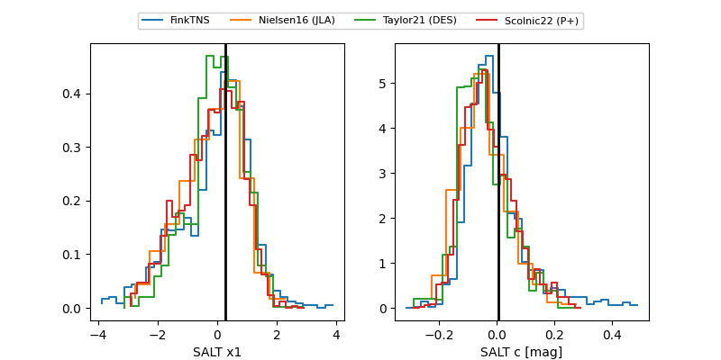

FINK: ZTF25abptelb
Lasair: ZTF25abptelb
ALeRCE: ZTF25abptelb
ZTF25abptelb (ztf,fink)
equatorial (ra, dec) = (301.4738,-19.28725)
galactic (l, b) = (23.0026,-24.75568)

last ztfg=18.32
4 ztfg detections